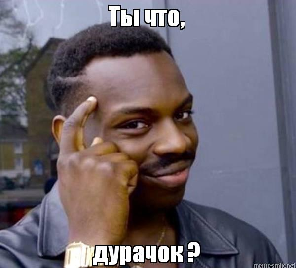

<!DOCTYPE html>

<html>
    <head>
        <title>TEST HTML</title>
        <!-- Teg script -->
        <link rel="stylesheet" type="text/css" href="001.css">
        <script>
            var confermation_var = prompt("Санёк, ты дурачёк ?");
            if (confermation_var="Да")
                {
                    for (let i = 0; i < 5; i++) { // выведет 0, затем 1, затем 2
                        document.write("<h1>Санёк ты дурак!<h1/>" + i + "<br/>");
                        document.write("<h6>Санёк ты дурак!<h6/>" + i + "<br/>");
                        document.write("" + "<br/>");
                    }
                }
            else {

                document.write( "No, I am not fool");
                
            };


        </script>
    </head>
    <body>

    </body>
</html>